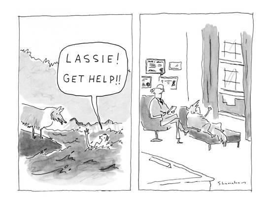

Giraffes can Talk!
An introduction to
Nonviolent Communication.
As developed by Marshall B Rosenberg (PhD)
Giraffes - the animals with the largest heart are an embodiment of the intention behind NVC.
The intention is to create a quality of connection that is necessary to meet everyone's needs compassionately.
For 1000s of years, the powerful wanted to dominate over the weak and learnt that if they tell people that xyz is right and abc is wrong, that working harder than hard is right and asking for a pay raise is greedy, selfish, needy, wrong then they get to become rich & they get to remain in power, and hence they have supported creating a system of communication over all these years which results in you communicating the way you do today. You and I are a PRODUCT of 1000s of years of social conditioning; and understanding that was very important to ME, it made me realise the reason I need to put in the effort to learn how to communicate with compassion.
Nonviolent Communication holds that most conflicts between individuals or groups arise from miscommunication about their human needs, due to coercive or manipulative language that aims to induce fear, guilt, shame, etc.. PINCH YOUR EAR if you have felt one of these emotions in the last 1 week alone.
Norms for this session:
Please mute your microphones.
Please turn on your cameras and be in gallery view when I am not sharing my screen.
Please write down your Questions in the chat.
SUBSTEP 1: Please mute your microphones.
SUBSTEP 2: Please turn on your cameras and be in gallery view when I am not sharing my screen.
SUBSTEP 3: Please write down your Questions in the chat.

You are quarantined in your home.
you need something to do with yourself (tap your head if you can relate to this)

Your strategy to meet your need is to watch netflix on the family desktop.
Unfortunately, your Mom has a zoom conference that she wants to attend
Now there are two things you can do
Option A: You assert your right and watch netflix because your mom's always
doing conferences and she has no right to keep you from meeting your needs.
Option B: You say, "hey mom, can I watch netflix on your work laptop instead so that we can both fulfill our needs?"
Now, if YOU would choose option 1 turn off your video, if you would like to choose option 2 turn on your video.
(RESPONSE)
So, there you go, the point is very simple - NVC is based on the assumption that We would prefer to meet needs in ways that don’t harm others if we recognize a path of action that will also meet our own needs.
GIVE
The amazing thing about humans is that the most base need for everyone is simply a need to contribute to life, to contribute to others, to give, to feel nice about oneself and fulfilled and satisfied because "hey I did something nice :)" Pinch your nose if you resonate with that.
NVC begins by assuming that we are all compassionate by nature and that violent strategies—whether verbal or physical—are learned behaviors taught and supported by the prevailing culture created to dominate over the underprivileged.
We all have the same needs.
Write into the chatbox a human need and DONT SEND it yet, show me a thumbs up when ready, we will all post together when I say WATERFALL.
Examples of needs.
What is one need of yours that this workshop is meeting?.
What is one need of yours that this workshop is helping meet?
Type it out in no more than a small sentence or even a word and hit send
(Read them out from chat as they come - need for growth, learning, feeling good about oneself etc.)
How else could you meet that exact need?
Where we differ from each other is in our strategies to meet needs.
Conflicts occur at the level of strategies, not needs.
Great! Now, take a moment and think about how else you could meet that exact need? Type it out, send it over.
(Read them out - exactly! You could read a book - could read NVC, you could help your dad in the kitchen to feel good about yourself etc.)
SUBSTEP 1: So, Where we differ from each other is in our strategies to meet needs.
Conflicts occur at the level of strategies, not needs
For e.g. A strategy to meet your need of connection could be to want to call your loved one/partner/bestfriend right now, but he/she/they are tired or don't like being on the phone for long periods of time (jazz hands if you can relate to either person in that scenario)
Now, what else could you do to connect with the other person in a way that meets both your needs.
(maybe they would agree to watch the same episode of netflix with you from afar, that's connection!
maybe they would like to do some exercise or Yoga with you on the phone where you each choose a pose, that's a connection!)
And so instead of blaming your friend - "you don't love me like I love you! You never want to talk to me!", you can choose to be the Giraffe in the situation and find another strategy of meeting your needs.
FEELINGS
How would you feel when your needs are recognized and attended to?
Show me an expression of how would you feel?
we feel happy, satisfied, excited, etc.
How would you feel when your needs are NOT recognized or attended to?
When our needs are not recognized and attended to, we feel sad, scared, angry, etc
Feelings ARE A RESULT of either our needs being met or our needs not being met. Simple. You feel angry, some need is not being met, you feel satisfied, some need is being met.
Take a moment to go through the list of feelings.
The FOUR part NVC process.
Now, let's talk about how we can communicate in a way wherein the needs of everyone involved can be heard (and notice that I am saying heard, not stated, even if your Mum is scolding you and blaming you using violent language that humans are used to, you can still use NVC to hear the need behind her strategy i.e. her anger and scolding)
Communication goes two ways Nonviolently expressing/talking and Nonviolently listening.
Just out of curiosity which one would you like to focus more on for yourself?
Tap your head if NVC Expressing
Pull BOTH your ears if NVC listening
1. Separating Observations and Evaluations.
The first step is to separate observations from evaluations. Evaluations label something or someone as right or wrong, lazy or kind, observations notice specific actions or facts and express them
Can you type into the chat what it is that you see? Take 20 seconds.
(read it out loud from the chat)
Is that an observation or an evaluation? Type it into the chat.
Observation: The paint on that wall is peeling off.
Evaluation: That wall needs a fresh coat of paint. It is the shittiest bloody wall I have ever seen in my Goddamn life.
So in NVC practice:
A violent evaluation is: "Boy, that NAME is a really lazy person! She won't get her project in on time"
Separated observation: NAME turned in her last 3 projects late. I am concerned that she might do the same this time.
Observation or Evaluation?
1. Keith is always late.
2. Keith was late to the first class 3 days out of 5 last week.
3. Vikraant didn't ask for my opinion during the debrief.
4. Vikraant never asks for my opinion.
Now I invite you to type into the chat whether the following statements are expressing observations or evaluations. Type the sentence number followed by the word observation/evaluation.
SUB 1. Keith is always late.
2. Keith was late to the first class 3 days out of 5 last week.
3. Vikraant didn't ask for my opinion during the debrief.
4. Vikraant never asks for my opinion.
Firstly, lets just blacklist the words ALWAYS and NEVER, ironically they are almost ALWAYS followed by evaluations.
Do you see the negative impact of an evaluation? What are you doing there?
(You are terming a person as having a set particular quality - if I tell you "You are really aggresive" You would probably feel bad and judged and not very kindly towards me. But, If I present concrete observations "Hey, bud, I thought you were aggrseive with your kid brother back there, do you want to talk?" - I am taking responsibility for my thoughts then I am not naming/judging you anymore.)
Breakout Room Activity: What I am seeing is...
2 minutes total.
2 Prompts/Scenarios (wherein someone is taking an action which may/may not meet your needs).
For Scenario 1: Express your clear observation as your partner listens. Switch roles for Scenario 2.
Breakout Room Activity: I Observe
2 minutes total
2 Prompts/Scenarios wherein someone is doing something to you.
For Scenario 1: Express your clear observation as your partner listens. Switch roles for Scenario 2.
Example: Your teacher keeps making you read out of the textbook and hasn't explained a single chapter herself since the new term started.
"Ma'am since the beginning of the term you have chosen to make us read the book to learn the syllabus in class, I am noticing that you haven't explained the way teachers normally do to us."
***COPY PASTE SCENARIOS 1 and 2 INTO CHAT and BROADCAST MESSAGE***
2. Taking responsibility for our feelings
+
Differentiating between feelings and thoughts.
You might know a version of this rhyme that children in the Author's neighbourhood used to sing when he was 5, "Sticks and stones can break my bones, but names can never hurt me" JAZZ HANDS
Even at age 5 we had the awareness that we have a choice as to how we react to things and other peoples names could only hurt us depending on how we took it.
Responsibility = Response + able, we can only be responsible for that which we are able to control, we can't control how people interpret our behaviour, therefore we are not responsible for the feelings that follow their interpretations, BUT, a big BUT we can control and are hence responsible for our behaviour itself and our intentions, we can control whether our behaviour is harming somebody or not.
Likewise, Other people are responsible for their behaviour, for things they say and do, and we are responsible for how we take it!
A few months ago someone called me a "Haramkhor" twice in the same week... The first time was when I was stopping a man from being violent with his wife, I came in between them and I stopped him, and then he snapped, called me that name, saying that I am useless and hence dipping my nose into someone else's business etc etc. I was SOO angry at that moment, I had barely stopped myself from jumping at him.
The second time was 2-3 days later when I with the help of a domestic abuse non-profit was telling the lady in question why she should love herself as much as she loves for her children and hence maybe needed to separate for her own safety. She got up and slapped me, "how dare you say something like that!!", called me the same name, called me a worthless good-for-nothing poking my nose where it didn't belong. I felt nothing but empathy and compassion for her.
I chose to feel anger. I chose to feel compassion. Their action towards me didn't make me feel anything, I did.
So in NVC we follow any expression of feelings with BECAUSE I. I am feeling hurt because I, never you make me feel, or I feel angry because you. Always I feel because I. Our feelings are a result of how we take things. I AM FEELING HURT BECAUSE I have such a strong need of basic respect as a human being, so when I hear a straight big NO to the Website I designed without any room for me to offer why I offer these design principles over yours, in my head I think that you don't respect me, my opinion, my experience, my knowledge. I respect you, I value your perspective, but I feel hurt and disrespected.
Thought or Feeling?
1. I feel like you don't love me.
2. I feel as if they don't care.
3. I feel frustrated.
4. I feel that you always do this.
5. I feel it is not the right thing to do.
6. I feel (he/she/they) is/are really mean.
7. I feel fulfilled.
Now I invite you to unmute/type into the chat whether the following statements are expressing thoughts or feelings. Type the sentence numver followed by thought/feeling.
SUBSTEP 1. I feel like you don't love me.
SUBSTEP 2. I feel as if they don't care.
3. I feel frustrated.
4. I feel that you always do this.
5. I feel it is not the right thing to do.
6. I feel (he/she/they) is/are really mean.
SUBSTEP 7. I feel fulfilled.
Thoughts, evaluations, judgements and criticisms usually follow when you follow "I feel" with "that, he/she/they/you, like, it etc." While taking responsibility for your feelings, you say "I feel _ because I am needing _ or was expecting __" and not "I feel _ because you _did this_"
3. Identifying and expressing needs.
Empathetically looking forneeds.
I have a need for respect and so I feel upset when someone talks about me behind my back, because I don't think I am accepted when that happens.
My need for inclusion isn't met when I am picked last when splitting soccer teams, I feel sad because of this.
So what we are doing here is looking for what need of mine isn't being met when I feel shame/anger/guilt etc.
What need is behind my teacher's scolding me right now?
We are trying to go beyond strategies that we and others employ and identify and express needs!
Breakout room activity: Listening for needs.
You will be given a scenario
You have 90 seconds to come up with what the needs of the person in this case may be
Share the needs you came up with upon returning.
You will be given a scenario that you discuss amongst yourselves.
You as a group have 90 seconds to come up with what the needs of the person in this case may be.
One of you jots the needs down in the breakout room, OR copy/paste them into the main session chat immediately upon returning.
Your bed isn't made, your ipad is lying on your pillow with oily fingerprints on it, the bedroom floor is strewn with clothes - clean and dirty, your closet is all over the place. Your mum sees your room and goes into a tantrum, you are being shouted at, blamed, called lazy-good-for-nothing, grounded etc.
What are the base human needs of your Mum that are not being met?
***COPY PASTE SCENARIOS 1 and 2 INTO CHAT and BROADCAST MESSAGE***
4. Making or hearing concrete requests that are gifts to others.
When people hear our requests and see it as an opportunity to contribute to our wellbeing, to give to us, it gives them this opportunity to do what we human beings love more than anything else - to serve life, to contribute and feel good about themselves!
But if the same request is heard as a demand, it threatens the person's AUTONOMY, it comes from a feeling of enslavement! And if they say yes, when they don't want to, they are doing something for you not out of compassion, or a desire to enrich your life, but out of FEAR that they will be punished, rejected, guilted, shamed etc.
This is an IMPORTANT difference because if the energy they are doing it with is not of receiving your request as a gift, but of guilt, shame, grudging, or EVEN a sesnse of duty, it reduces their chances of responding compassionately to you in the future.
How to frame a request?

After we have expressed our observations, feelings, needs to the other person, we follow it up with what we would like for them to do to contribute to our wellbeing.
How do we do that in a NVC way?
STEP 1: Concrete action language = We want to avoid vague, abstract or ambiguos phrasing.
In this cartoon, the man is drowning, he shouts out to his dog on the shore, "lassie get help", in the next frame we see lassie on the psychiatrists couch, getting help, psychological help for herself.
We all know how help means different things to different people. Be precise.
STEP 2: Positive action language - saying what we DO want, rather than what we don't want (don't = heard as criticism and confusion as to what they actually should do)
STEP 3: Follow through - leave room to say no - in the energy that you say it with, if someone can't say no, it doesn't help either of you, it generates ill-will, reduces compassion.
Give me an example of a request?
Give me an example of a demand?
Give me an example of an evaluation that is meant to be a request?
SUB 1: Give me an example of a request?
2: Give me an example of a demand?
3: Give me an example of an evaluation that is meant to be a request?
Optional Activity post the webinar: Journal like a Giraffe! (10-15 minutes)
What need of yours was met or not met by this workshop?
How do you feel because of it?
What is a goal or a concrete request that you have for yourself?
What need of yours was met or not met by this workshop?
How do you choose to feel because of it?
What is one concrete request in positive action language that you would like to make of yourself?